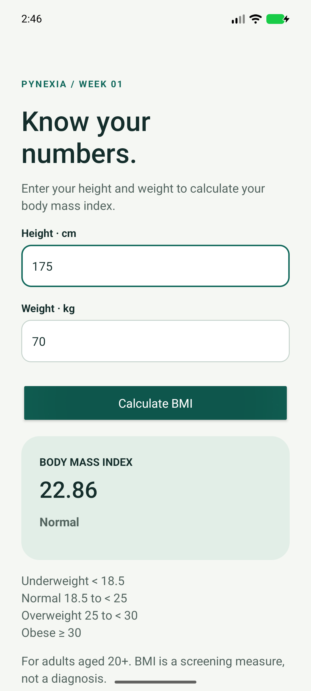

Native Android · Java + XML
BMI Calculator
From two inputs to a clear result.
A native Android calculator that validates height and weight, computes BMI, and displays the corresponding adult category.
Project showcase · Android 8.0+ · Debug build for assessment.
This page is not an Android emulator.

01 / Implementation
What the exercise demonstrates
Built around the assignment's Android UI, input and navigation requirements.
Read the bilingual implementation report (PDF)Inputs and validation
Height: 50-300 cm. Weight: 10-700 kg. Empty, zero, negative, malformed and nonfinite inputs are rejected. Arabic digits and decimal commas are supported.
Calculation and category
BMI = weight in kg / height in metres squared. Categories use the unrounded value: below 18.5, below 25, below 30, or 30 and above.
Result handling
The result uses two decimal places. Input edits clear stale results; Reset clears the form. The calculated result survives Activity recreation.
02 / In the app
Real screens. Tested flows.
Captured from the native application running on the test emulator. Select an image to see it at full resolution.

03 / Try it
A short review walkthrough
- Enter height 175 cm and weight 70 kg, then tap Calculate BMI.
- Confirm the result is 22.86 with the Normal category.
- Change an input: the old result disappears until recalculation.
- Try empty fields, zero or malformed input, then Reset. Rotate after a valid calculation to check restoration.
Build and run from source
Open the repository root in Android Studio. Install SDK 35 / Build Tools 35.0.0, select JDK 17 or 21, sync Gradle and run the bmi module. Initial sync needs internet.
Verification / 25 Oct 2026
Checks with documented limits
Four JVM tests cover calculation, category boundaries, localized parsing and invalid values. Two device tests cover calculation, clearing/resetting and Activity recreation.
4 JVM tests and 2 device tests passed. Lint: zero errors, 6 warnings retained without suppression.
Pixel 8 emulator, Android 17 / API 37 (37.1 image), x86_64. No physical-device or API 26 test run. The APK signature was verified.
Inspect verification reportsشرح التمرين
يحسب التمرين مؤشر كتلة الجسم من الطول بالسنتيمتر والوزن بالكيلوغرام، ثم يعرض النتيجة وتصنيفها. يفحص المدخلات ويدعم الأرقام العربية والفاصلة العشرية. يعتمد التصنيف على القيمة الأصلية قبل التقريب، وتُمسح النتيجة السابقة عند تعديل المدخلات.
للتجربة: أدخل طولًا قدره ١٧٥ سم ووزنًا قدره ٧٠ كغم. النتيجة المتوقعة ٢٢٫٨٦ ضمن المجال الطبيعي. جرّب بعد ذلك قيمة صفرية أو حقلًا فارغًا للتحقق من رسائل الخطأ. التصنيفات للبالغين بعمر ٢٠ سنة فأكثر.
04 / Submission kit
Everything for the project form
Copy the repository URL, hosted URL and implementation notes. Attach the ZIP (under 10 MB) or the PDF report. These are prepared values; this page does not submit to Pynexia.